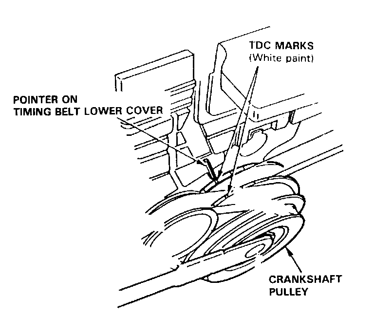
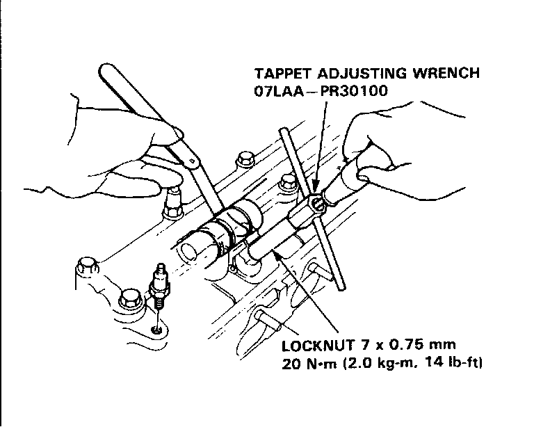
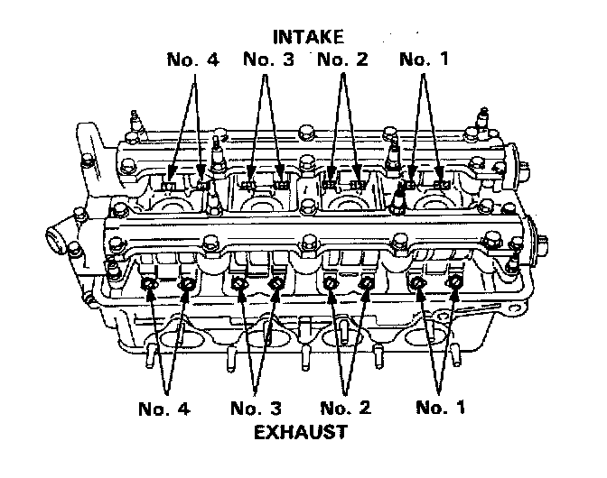
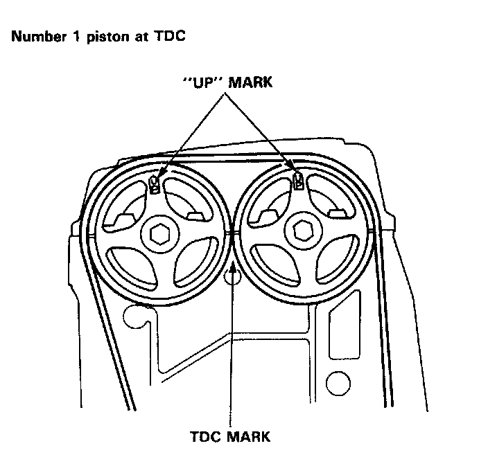
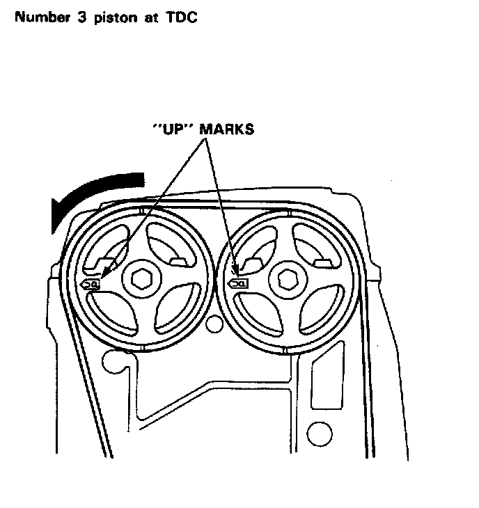
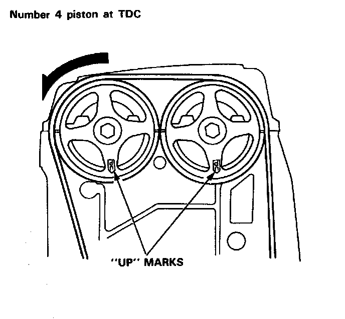

Valve Clearance: Adjustments
NOTE: Valves should be adjusted when the cylinder head temperature is less than 38°C (100° F). Adjustment is the same for intake and exhaust valves. After adjusting, retorque the crank pulley bolt to 180 Nm (18.0 kg-m, 130 lb-ft).
1. Remove cylinder head cover.

2. Set No. 1 piston at TDC. "UP" mark on the pulley should be at top, and TDC grooves on the pulley should align with the pointer on timing belt back cover. TDC grooves (white paint) on the crankshaft pulley should align with pointer on the timing belt lower cover.


3. Adjust valve clearance on No.1 cylinder.
Intake: 0.15-0.19 mm (0.006-0.007 in.)
Exhaust: 0.17-0.21 mm (0.007-0.008 in.)
4. Loosen the locknut and turn the adjusting screw until feeler gauge slides back and forth with a slight amount of drag.

5. Tighten locknut and recheck clearance again. Repeat adjustment if necessary.
6. Rotate the crankshaft 180° counterclockwise (cam pulley turns 90°). The 'UP" mark should be on the exhaust side Adjust valves on No. 3 cylinder.

7. Rotate crankshaft 180° counterclockwise to bring No.4 piston to TDC. Both TDC grooves are once again visible. Adjust valves on No.4 cylinder.

8. Rotate crankshaft 180° counterclockwise to bring No.2 piston to TDC. The "UP" marks should be on the intake side. Adjust valves on No.2 cylinder.